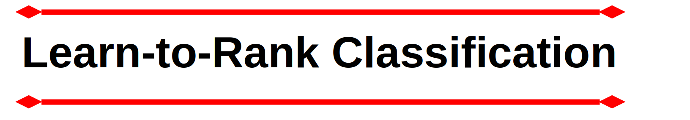
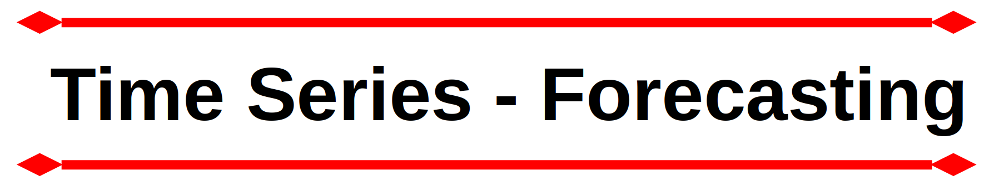

Cientista de Dados - Freelancer
Eleve sua utilização de dados com um cientista de dados freelancer experiente, trazendo uma combinação de conhecimento estatístico, habilidade de aprendizado de máquina e visão de negócios.
Com um histórico de tradução de conjuntos de dados complexos em insights estratégicos, sou especialista em criar soluções sob medida que geram resultados significativos. Da modelagem preditiva
à descoberta de padrões ocultos, meu compromisso é capacitar as empresas com o potencial transformador de seus dados. Vamos colaborar e desbloquear o próximo nível de sucesso baseado em dados
para o seu empreendimento.
Pesquisador de Pós Doutorado
Universidade de São Paulo - Brazil - 2021 - 2023
Desenvolvi pesquisas de dados esportivos onde investiguei as demandas competitivas dos melhores remadores do mundo na última década. Os resultados da minha pesquisa mostraram que remadores de classe mundial apresentam gestão de regata semelhante, independentemente da faixa etária, sugerindo que os treinadores aplicam estratégias de desenvolvimento de gestão de regata desde tenra idade. Além disso, os remadores atingem o pico de desempenho em idades semelhantes para barcos com tripulação individual e dupla, enquanto os barcos com quatro remadores apresentam idades mais jovens.
Além disso, outras tarefas incluíram auxiliar estudantes de pós-graduação em suas pesquisas, fornecendo aconselhamento sobre métodos científicos e tratamento de dados (manipulação de dados, análise de dados).
Concluí o contrato dentro do prazo, entregando meu relatório final e submeti minha pesquisa para publicação.
Veja meu currículo acadêmico completo aqui.
Learn-to-Rank Classificação

Cross-selling é uma estratégia poderosa para empresas que desejam obter receitas maiores, construir um relacionamento mais forte com os clientes atuais e fornecer excelentes serviços ou produtos adicionais para ajudar os clientes a resolver seus problemas. A empresa (fictícia) "Are you insured?" fornece serviços de seguro saúde para milhares de clientes. A empresa ampliou seu portfólio de serviços e perguntou para seus atuais clientes se eles teriam interesse em adquirir seu novo produto - o seguro automóvel.
Após 304 mil clientes responderem à consulta, a empresa ainda tem para oferecer o serviço de seguro automóvel a cerca de 75 mil clientes que não responderam à pesquisa. Por limitações orçamentárias, a empresa consegue entrar em contato com apenas 20 mil clientes, desses 75 mil. Portanto, seria necessária uma lista ranqueada e otimizada para aumentar as chances de contato com clientes com real interesse em adquirir esse novo produto. Portanto, uma solução objetiva deve ser desenvolvida para otimizar a operação.
O produto final deste projeto é um documento do Planilhas Google vinculado ao modelo de aprendizado de máquina atualmente em produção. Este documento fornece uma lista de clientes com probabilidade de adquirir seguro automóvel, com base nas previsões feitas pelo modelo.
Ferramentas utilizadas neste projeto:
Python.
Microsoft VSCode.
Render Cloud.
Flask, and Python API.
Regression and Classification Machine Learning Algorithms
GIT & GitHub.
Google Sheets App script
Séries temporais - Previsão

Projeto de Data Science “end-to-end”, onde apliquei diversas técnicas incluindo CRISP-DS, modelos de machine learning para processamento de dados e previsão de vendas de uma rede de farmácias (fictícia).
Após receber um problema de negócio do CFO da empresa, a tarefa solicitada foi prever a receita de vendas para seis semanas, com base em um procedimento supervisionado de aprendizado de máquina. Após processamento detalhado dos dados e envio do modelo para produção, foi criado um bot no Telegram, onde o CFO poderia acessar as previsões de cada loja, através do seu celular.
Este projeto oferece uma previsão de vendas de produtos utilizando Machine Learning com os benefícios de usar um chatbot para entregar os resultados de forma conveniente.
Ferramentas utilizadas neste projeto:
Python, Pandas, Numpy, Seaborn, requests, inflection, xgboost, scipy, boruta, matplotlib.
Sklearn.
Render Cloud.
Telegram.
Microsoft VSCode
GIT & GitHub.
ETL para Dados COmpetitivos de Remo
O remo possui uma rica tradição olímpica e é um esporte amplamente praticado em inúmeras universidades em todo o mundo. Também se tornou um exercício de estilo de vida popular. O esporte apresenta três grandes competições de nível mundial categorizadas por faixas etárias: Sub 19, Sub 23 e Sênior. Estas competições produzem dados valiosos e cruciais para a compreensão das nuances do remo. Infelizmente, embora esses dados sejam públicos, eles são apresentados em arquivos PDF, o que representa desafios para organização e análise.
Criei um processo para coletar dados de competição de remadores de classe mundial. Os dados foram armazenados em mais de 250 arquivos PDF. Foi necessário baixar os arquivos de uma fonte pública, onde os PDFs estavam armazenados, e criar códigos utilizando Python e bibliotecas específicas para extrair todo o conteúdo de cada arquivo PDF. Uma vez extraídos os dados no formato string, realizei toda a formatação e processamento para utilização dos dados em pesquisas acadêmicas.
Ferramentas utilizadas neste projeto:
Python, Pandas, and PDFPlumber.
Microsoft VSCode.
GIT & GitHub
Otimização de compras e vendas imobiliárias

Este projeto analisa como maximizar os lucros em um negócio imobiliário. Utilizei Python e suas bibliotecas para análise de dados e estatísticas para detectar propriedades com potencial de lucro. Assim, os imóveis poderiam ser comprados pela empresa e vendidos com margens de lucro interessantes. Os insights de compra foram baseados nas características do imóvel que incluem localização, tamanho do imóvel, número de quartos, entre outros.
Construí uma aplicação web utilizando Streamlit e Streamlit Share para facilitar e otimizar a tomada de decisão dos stakeholders da empresa. O resultado da solução apresentada, se implementada, seria um lucro médio de $71.700,00
Ferramentas utilizadas neste projeto:
Python, Pandas, Numpy and Seaborn.
Jupyter Notebook.
Plotly and Folium interactive maps.
Streamlit Cloud.
Streamlit Python framework web.
Otimização de serviço de locação de bicicletas
Este projeto fornece insights para o seguinte problema: Como os clientes usam o serviço? Quais são as demandas do serviço?
À medida que a empresa planeja ações futuras, a equipe de marketing precisa entender como os clientes utilizam o serviço e o que pode ser feito para maximizar o lucro.
Ferramentas utilizadas neste projeto:
R, ggplot2.
RStudio.
GIT and GitHub.